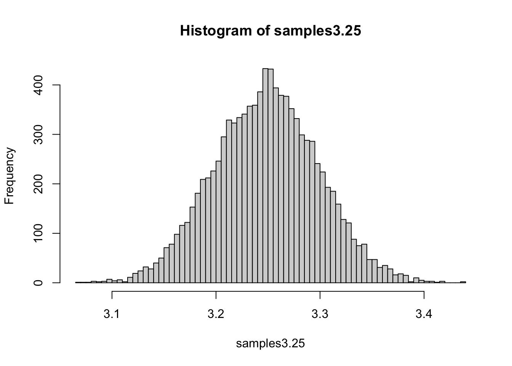
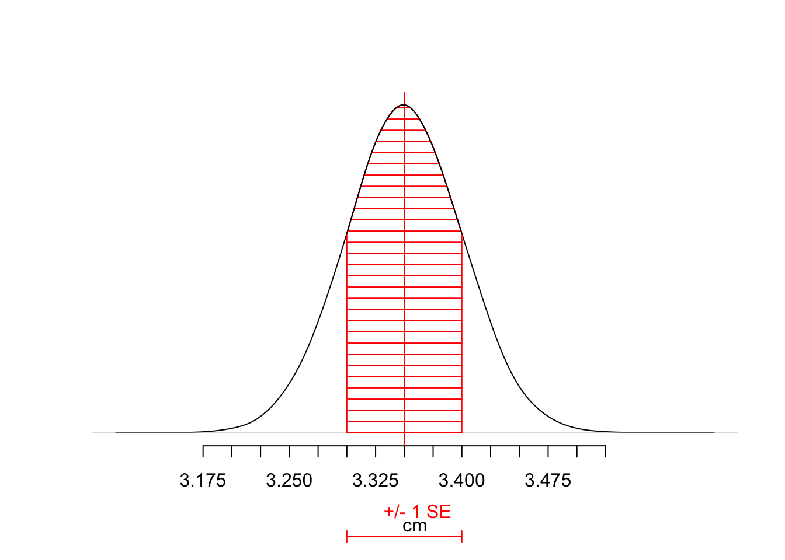

9 Confidence and Population Means (Ch. 9)
Drennan begins this chapter (p107) with two observations that are vital to archaeological use of any kind of statistics.
In real life…we do not know either the mean or the standard deviation of the population from which our sample is drawn. Indeed those are precisely the things we are trying to estimate on the basis of a sample.
…instead of having one population and all the possible samples from it, we have one sample and [must] consider the possible populations it might have come from.
We are sampling from unknown populations, and using our samples to make inferences about those populations. Justifying those inferences, and assessing the limits of what we can infer, is one of the most important things that we do. This is equally true whether one uses quantitative data and statistics or not, but much harder to be explicit about without statistics.
Drennan does not provide specific measurements for the set of 100 projectile points that he uses for the examples in Ch.9, but if we make some assumptions about their distribution (not necessarily justifiable, but we can always explore the effects of changing our assumptions) we can simulate this dataset easily, since we know the mean and standard deviation.
If we assume that the population is normally distributed, we can use rnorm() - and if we have other ideas about the distribution we can easily generate samples from such distributions - see ?Distributions.
## [1] 4.3 3.8 3.5 3.2 4.0 3.7 3.5 3.3 3.5 2.5 2.1 3.7 4.1 3.0 4.1 3.7 4.1 4.1
## [19] 3.2 3.6 3.4 2.9 3.5 3.1 3.8 3.6 3.4 4.0 3.6 4.2 2.2 3.7 2.6 3.6 2.9 3.3
## [37] 3.5 4.0 3.4 4.0 3.7 2.9 3.1 1.8 3.0 3.5 3.3 2.9 3.0 3.4 3.4 2.3 2.9 3.3
## [55] 3.8 2.3 3.3 2.7 3.7 3.1 3.2 2.9 2.6 2.7 3.1 3.6 3.5 4.2 3.5 3.1 3.6 3.2
## [73] 4.0 3.4 4.5 2.2 2.7 3.7 3.7 3.3 2.3 2.9 3.9 3.9 3.1 3.1 2.6 3.3 3.6 3.6
## [91] 4.4 4.1 3.8 2.7 3.4 3.7 2.9 2.8 2.6 3.3Nothing that we can do in R can address the issues of deciding whether the sample can be treated as unbiased for the purposes of the question(s) that you may want to ask. This is - as Drennan discusses on p108-109 - vital, but it is entirely up to you and your brain.
#build a population with mean 3.25cm and standard deviation .5 cm
pp_pop <- rnorm(100000, 3.25, .5)
hist(pp_pop, 100) #examine the populationsamples3.25 <- sapply(1:10000, function(x) mean(sample(pp_pop, 100, replace = T)))
hist(samples3.25, 100) #examine an approximation of the special batch 
This is the mean of a lot of samples from our population of mean 3.25cm and standard deviation .5cm, rather than “all possible” - but it makes the point nonetheless (compare to Drennan Figure 9.1). We could repeat that process for the other special batches that Drennan plots in Figures 9.2 - 9.5. These show various distributions of means for the samples from populations with various means - and in all of them we can locate the mean of the sample we have: 3.35cm, and use the height of the histogram (frequency) to judge how likely it is that our sample, with its mean of 3.35 and standard deviation of .5, is to have come from that particular distribution of means.
Figure 9.6 represents the “batch consisting of the means of the populations from which a sample of 100 with a mean of 3.35 cm and a standard deviation of 0.50 cm might have come.”
Plotting this is mildly complicated; the main feature of interest (in R terms) below is that we strip our plot of axes (axes = F) in order to then rebuild the x-axis that we want, and then we add the SE bar (using arrows() for the bar and mtext() for the label; the latter is necessary because the label we want to add is in the plot margins rather than in the main area of the plot). The complicated part - which you needn’t follow unless you want to - is the use of approxfun() to generate a sequence of y-values that lets us fill the area under the curve (by using polygon()).
pop9.6 <- rnorm(100000, 3.35, .5/sqrt(100))
plot(density(pop9.6, bw = .01), xlab = "cm", ylab = "", main = "", axes = F)
axis(1, at = seq(3.175, 3.525, by =.025))
arrows(x0 = 3.35 - (.5/sqrt(100)), x1 = 3.35 + (.5/sqrt(100)), y0 = -2.5,
y1 = -2.5, col = "red", code = 3, length = .05, angle = 90, xpd=T)
mtext(1, 2.4, text = " +/- 1 SE", col = "red")
get.y <- approxfun(density(pop9.6, bw = .01)$x, density(pop9.6, bw = .01)$y)
polygon(x = c(3.3, seq(3.3, 3.4, .001), 3.4), y = c(0, get.y(seq(3.3, 3.4, .001)), 0),
density = 10, col = "red", angle = 0)
abline(v = 3.35, col = "red")
lines(seq(3.3, 3.4, .001), get.y(seq(3.3, 3.4, .001))) #re-draw black curve
9.1 Student’s t
Probabilities that population means fall w/in different ranges (following Drennan, bottom of p.118):
## [1] 0.9517603## [1] 0.9965845## [1] 0.6802515It’s straightforward to estimate the number of standard errors for a particular confidence level using t quantiles. Either of the lines below will return a 90% confidence interval for a sample of 100. In the first you have to figure out for yourself which quantile you need for your desired confidence interval; in the second you can plug in your desired confidence interval and let R do the arithmetic.
## [1] 1.660391## [1] 1.660391Rim Diameter Measurements for a Sample of 25 Rim Sherds (Drennan Table 9.2):
Rims <- c(7.3, 9.3, 11.6, 11.8, 12.2, 12.5, 12.9, 13.3, 13.4, 13.8, 14.0, 14.4, 14.8,
14.9, 15.6, 15.7, 15.8, 16.2, 16.5, 17.3, 17.7, 18.8, 19.4, 19.5, 21.0)
summary(Rims)## Min. 1st Qu. Median Mean 3rd Qu. Max.
## 7.30 12.90 14.80 14.79 16.50 21.00We can use the finite population corrector to illustrate the way that R makes it possible to build your own function to handle computations that you may do repeatedly. Just as mean() is an R function that performs a series of operations on an object, you can define your own function that performs a series of operations. The example here is based on Drennan p.123ff.
## <srcref: file "" chars 1:8 to 1:54>Here we’ve called the function fpc (for “finite population corrector”). We assign that name using <- as for any object, and then use function() to specify what inputs we expect the function to take (here three arguments: ‘std’, ‘n’, and ‘N’), and what (in the { } that follows) we then want the function to do with those inputs.
When you define the function (i.e. run that line of code that assigns your function to a name), there is no output unless there is an error, but the function has been written into your workspace environment (you can check R Studio’s ‘Gobal Environment’ tab, or run ls() to check).
If you just type the function name in the console, R prints the definition of the function. To run it, you need to give it values for the necessary arguments, just as you would for mean() or anything else.
The function that we’ve defined - fpc - takes three values (arguments): the standard deviation, the sample size, and the population size. As with any R function, you can either put the values in order or call them by name.
We can test our shiny new function using the sample of 25 rim sherds:
## [1] 0.4666337“How large a sample do we need?” (Drennan, p.126)
SampleSize <- function(sd, t, ER) {(sd*t/ER)^2}
#where sd = standard deviation, t = Student's t, ER = error range
SampleSize(.9, 1.96, .5)## [1] 12.44678## [1] 2.178813## [1] 15.39778## [1] 2.13145The chapter ends with a discussion of assumptions and robust measures. As you will remember, R has features for computing trimmed means and standard deviations. We can run through his example using the data in Table 9.3:
#Weights of a Small Sample of Projectile Points:
PtWgt <- c(96, 37, 28, 34, 52, 18, 21, 39, 156, 43, 44, 19, 30, 108, 55,
24, 28, 47, 39, 31)
mean(PtWgt)## [1] 47.45## [1] 37.92857## [1] 127.0754For the ‘Practice’ problems, you’ll find a .pdf of Drennan p131 here. Use Tabula to scrape the tables out of it, edit them as needed (putting all the data in a single column - what’s an efficient way to do this?), and then you can address Drennan’s questions.